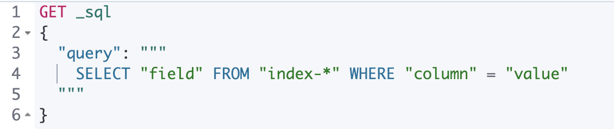

SQL REST APIedit
Overviewedit
The SQL search API accepts SQL in a JSON document, executes it, and returns the results. For example:
POST /_sql?format=txt
{
"query": "SELECT * FROM library ORDER BY page_count DESC LIMIT 5"
}
Which returns:
author | name | page_count | release_date -----------------+--------------------+---------------+------------------------ Peter F. Hamilton|Pandora's Star |768 |2004-03-02T00:00:00.000Z Vernor Vinge |A Fire Upon the Deep|613 |1992-06-01T00:00:00.000Z Frank Herbert |Dune |604 |1965-06-01T00:00:00.000Z Alastair Reynolds|Revelation Space |585 |2000-03-15T00:00:00.000Z James S.A. Corey |Leviathan Wakes |561 |2011-06-02T00:00:00.000Z
Using Kibana Console
If you are using Kibana Console
(which is highly recommended), take advantage of the
triple quotes """ when creating the query. This not only automatically escapes double
quotes (") inside the query string but also support multi-line as shown below:

Response Data Formatsedit
While the textual format is nice for humans, computers prefer something more structured.
Elasticsearch SQL can return the data in the following formats which can be set
either through the format property in the URL or by setting the Accept HTTP header:
The URL parameter takes precedence over the Accept HTTP header.
If neither is specified then the response is returned in the same format as the request.
format |
|
Description |
Human Readable |
||
|
|
|
|
|
JSON (JavaScript Object Notation) human-readable format |
|
|
|
|
|
CLI-like representation |
|
|
YAML (YAML Ain’t Markup Language) human-readable format |
Binary Formats |
||
|
|
|
|
|
Smile binary data format similar to CBOR |
The CSV format accepts a formatting URL query attribute, delimiter, which indicates which character should be used to separate the CSV
values. It defaults to comma (,) and cannot take any of the following values: double quote ("), carriage-return (\r) and new-line (\n).
The tab (\t) can also not be used, the tsv format needs to be used instead.
Here are some examples for the human readable formats:
CSVedit
POST /_sql?format=csv
{
"query": "SELECT * FROM library ORDER BY page_count DESC",
"fetch_size": 5
}
which returns:
author,name,page_count,release_date Peter F. Hamilton,Pandora's Star,768,2004-03-02T00:00:00.000Z Vernor Vinge,A Fire Upon the Deep,613,1992-06-01T00:00:00.000Z Frank Herbert,Dune,604,1965-06-01T00:00:00.000Z Alastair Reynolds,Revelation Space,585,2000-03-15T00:00:00.000Z James S.A. Corey,Leviathan Wakes,561,2011-06-02T00:00:00.000Z
or:
POST /_sql?format=csv&delimiter=%3b
{
"query": "SELECT * FROM library ORDER BY page_count DESC",
"fetch_size": 5
}
which returns:
author;name;page_count;release_date Peter F. Hamilton;Pandora's Star;768;2004-03-02T00:00:00.000Z Vernor Vinge;A Fire Upon the Deep;613;1992-06-01T00:00:00.000Z Frank Herbert;Dune;604;1965-06-01T00:00:00.000Z Alastair Reynolds;Revelation Space;585;2000-03-15T00:00:00.000Z James S.A. Corey;Leviathan Wakes;561;2011-06-02T00:00:00.000Z
JSONedit
POST /_sql?format=json
{
"query": "SELECT * FROM library ORDER BY page_count DESC",
"fetch_size": 5
}
Which returns:
{
"columns": [
{"name": "author", "type": "text"},
{"name": "name", "type": "text"},
{"name": "page_count", "type": "short"},
{"name": "release_date", "type": "datetime"}
],
"rows": [
["Peter F. Hamilton", "Pandora's Star", 768, "2004-03-02T00:00:00.000Z"],
["Vernor Vinge", "A Fire Upon the Deep", 613, "1992-06-01T00:00:00.000Z"],
["Frank Herbert", "Dune", 604, "1965-06-01T00:00:00.000Z"],
["Alastair Reynolds", "Revelation Space", 585, "2000-03-15T00:00:00.000Z"],
["James S.A. Corey", "Leviathan Wakes", 561, "2011-06-02T00:00:00.000Z"]
],
"cursor": "sDXF1ZXJ5QW5kRmV0Y2gBAAAAAAAAAAEWWWdrRlVfSS1TbDYtcW9lc1FJNmlYdw==:BAFmBmF1dGhvcgFmBG5hbWUBZgpwYWdlX2NvdW50AWYMcmVsZWFzZV9kYXRl+v///w8="
}
TSVedit
POST /_sql?format=tsv
{
"query": "SELECT * FROM library ORDER BY page_count DESC",
"fetch_size": 5
}
Which returns:
author name page_count release_date Peter F. Hamilton Pandora's Star 768 2004-03-02T00:00:00.000Z Vernor Vinge A Fire Upon the Deep 613 1992-06-01T00:00:00.000Z Frank Herbert Dune 604 1965-06-01T00:00:00.000Z Alastair Reynolds Revelation Space 585 2000-03-15T00:00:00.000Z James S.A. Corey Leviathan Wakes 561 2011-06-02T00:00:00.000Z
TXTedit
POST /_sql?format=txt
{
"query": "SELECT * FROM library ORDER BY page_count DESC",
"fetch_size": 5
}
Which returns:
author | name | page_count | release_date -----------------+--------------------+---------------+------------------------ Peter F. Hamilton|Pandora's Star |768 |2004-03-02T00:00:00.000Z Vernor Vinge |A Fire Upon the Deep|613 |1992-06-01T00:00:00.000Z Frank Herbert |Dune |604 |1965-06-01T00:00:00.000Z Alastair Reynolds|Revelation Space |585 |2000-03-15T00:00:00.000Z James S.A. Corey |Leviathan Wakes |561 |2011-06-02T00:00:00.000Z
YAMLedit
POST /_sql?format=yaml
{
"query": "SELECT * FROM library ORDER BY page_count DESC",
"fetch_size": 5
}
Which returns:
columns: - name: "author" type: "text" - name: "name" type: "text" - name: "page_count" type: "short" - name: "release_date" type: "datetime" rows: - - "Peter F. Hamilton" - "Pandora's Star" - 768 - "2004-03-02T00:00:00.000Z" - - "Vernor Vinge" - "A Fire Upon the Deep" - 613 - "1992-06-01T00:00:00.000Z" - - "Frank Herbert" - "Dune" - 604 - "1965-06-01T00:00:00.000Z" - - "Alastair Reynolds" - "Revelation Space" - 585 - "2000-03-15T00:00:00.000Z" - - "James S.A. Corey" - "Leviathan Wakes" - 561 - "2011-06-02T00:00:00.000Z" cursor: "sDXF1ZXJ5QW5kRmV0Y2gBAAAAAAAAAAEWWWdrRlVfSS1TbDYtcW9lc1FJNmlYdw==:BAFmBmF1dGhvcgFmBG5hbWUBZgpwYWdlX2NvdW50AWYMcmVsZWFzZV9kYXRl+v///w8="
Paginating through a large responseedit
Using the example from the previous section, one can
continue to the next page by sending back the cursor field. In the case of CSV, TSV and TXT
formats, the cursor is returned in the Cursor HTTP header.
POST /_sql?format=json
{
"cursor": "sDXF1ZXJ5QW5kRmV0Y2gBAAAAAAAAAAEWYUpOYklQMHhRUEtld3RsNnFtYU1hQQ==:BAFmBGRhdGUBZgVsaWtlcwFzB21lc3NhZ2UBZgR1c2Vy9f///w8="
}
Which looks like:
{
"rows" : [
["Dan Simmons", "Hyperion", 482, "1989-05-26T00:00:00.000Z"],
["Iain M. Banks", "Consider Phlebas", 471, "1987-04-23T00:00:00.000Z"],
["Neal Stephenson", "Snow Crash", 470, "1992-06-01T00:00:00.000Z"],
["Frank Herbert", "God Emperor of Dune", 454, "1981-05-28T00:00:00.000Z"],
["Frank Herbert", "Children of Dune", 408, "1976-04-21T00:00:00.000Z"]
],
"cursor" : "sDXF1ZXJ5QW5kRmV0Y2gBAAAAAAAAAAEWODRMaXBUaVlRN21iTlRyWHZWYUdrdw==:BAFmBmF1dGhvcgFmBG5hbWUBZgpwYWdlX2NvdW50AWYMcmVsZWFzZV9kYXRl9f///w8="
}
Note that the columns object is only part of the first page.
You’ve reached the last page when there is no cursor returned
in the results. Like Elasticsearch’s scroll,
SQL may keep state in Elasticsearch to support the cursor. Unlike
scroll, receiving the last page is enough to guarantee that the
Elasticsearch state is cleared.
To clear the state earlier, use the clear cursor API:
POST /_sql/close
{
"cursor": "sDXF1ZXJ5QW5kRmV0Y2gBAAAAAAAAAAEWYUpOYklQMHhRUEtld3RsNnFtYU1hQQ==:BAFmBGRhdGUBZgVsaWtlcwFzB21lc3NhZ2UBZgR1c2Vy9f///w8="
}
Which will like return the
{
"succeeded" : true
}
Filtering using Elasticsearch Query DSLedit
One can filter the results that SQL will run on using a standard Elasticsearch Query DSL by specifying the query in the filter parameter.
POST /_sql?format=txt
{
"query": "SELECT * FROM library ORDER BY page_count DESC",
"filter": {
"range": {
"page_count": {
"gte" : 100,
"lte" : 200
}
}
},
"fetch_size": 5
}
Which returns:
author | name | page_count | release_date ---------------+------------------------------------+---------------+------------------------ Douglas Adams |The Hitchhiker's Guide to the Galaxy|180 |1979-10-12T00:00:00.000Z
A useful and less obvious usage for standard Query DSL filtering is to search documents by a specific routing key.
Because Elasticsearch SQL does not support a routing parameter, one can specify a terms filter for the _routing field instead:
POST /_sql?format=txt
{
"query": "SELECT * FROM library",
"filter": {
"terms": {
"_routing": ["abc"]
}
}
}
Columnar resultsedit
The most well known way of displaying the results of an SQL query result in general is the one where each individual record/document represents one line/row. For certain formats, Elasticsearch SQL can return the results in a columnar fashion: one row represents all the values of a certain column from the current page of results.
The following formats can be returned in columnar orientation: json, yaml, cbor and smile.
POST /_sql?format=json
{
"query": "SELECT * FROM library ORDER BY page_count DESC",
"fetch_size": 5,
"columnar": true
}
Which returns:
{
"columns": [
{"name": "author", "type": "text"},
{"name": "name", "type": "text"},
{"name": "page_count", "type": "short"},
{"name": "release_date", "type": "datetime"}
],
"values": [
["Peter F. Hamilton", "Vernor Vinge", "Frank Herbert", "Alastair Reynolds", "James S.A. Corey"],
["Pandora's Star", "A Fire Upon the Deep", "Dune", "Revelation Space", "Leviathan Wakes"],
[768, 613, 604, 585, 561],
["2004-03-02T00:00:00.000Z", "1992-06-01T00:00:00.000Z", "1965-06-01T00:00:00.000Z", "2000-03-15T00:00:00.000Z", "2011-06-02T00:00:00.000Z"]
],
"cursor": "sDXF1ZXJ5QW5kRmV0Y2gBAAAAAAAAAAEWWWdrRlVfSS1TbDYtcW9lc1FJNmlYdw==:BAFmBmF1dGhvcgFmBG5hbWUBZgpwYWdlX2NvdW50AWYMcmVsZWFzZV9kYXRl+v///w8="
}
Any subsequent calls using a cursor still have to contain the columnar parameter to preserve the orientation,
meaning the initial query will not remember the columnar option.
POST /_sql?format=json
{
"cursor": "sDXF1ZXJ5QW5kRmV0Y2gBAAAAAAAAAAEWWWdrRlVfSS1TbDYtcW9lc1FJNmlYdw==:BAFmBmF1dGhvcgFmBG5hbWUBZgpwYWdlX2NvdW50AWYMcmVsZWFzZV9kYXRl+v///w8=",
"columnar": true
}
Which looks like:
{
"values": [
["Dan Simmons", "Iain M. Banks", "Neal Stephenson", "Frank Herbert", "Frank Herbert"],
["Hyperion", "Consider Phlebas", "Snow Crash", "God Emperor of Dune", "Children of Dune"],
[482, 471, 470, 454, 408],
["1989-05-26T00:00:00.000Z", "1987-04-23T00:00:00.000Z", "1992-06-01T00:00:00.000Z", "1981-05-28T00:00:00.000Z", "1976-04-21T00:00:00.000Z"]
],
"cursor": "46ToAwFzQERYRjFaWEo1UVc1a1JtVjBZMmdCQUFBQUFBQUFBQUVXWjBaNlFXbzNOV0pVY21Wa1NUZDJhV2t3V2xwblp3PT3/////DwQBZgZhdXRob3IBBHRleHQAAAFmBG5hbWUBBHRleHQAAAFmCnBhZ2VfY291bnQBBGxvbmcBAAFmDHJlbGVhc2VfZGF0ZQEIZGF0ZXRpbWUBAAEP"
}
Passing parameters to a queryedit
Using values in a query condition, for example, or in a HAVING statement can be done "inline",
by integrating the value in the query string itself:
POST /_sql?format=txt
{
"query": "SELECT YEAR(release_date) AS year FROM library WHERE page_count > 300 AND author = 'Frank Herbert' GROUP BY year HAVING COUNT(*) > 0"
}
or it can be done by extracting the values in a separate list of parameters and using question mark placeholders (?) in the query string:
POST /_sql?format=txt
{
"query": "SELECT YEAR(release_date) AS year FROM library WHERE page_count > ? AND author = ? GROUP BY year HAVING COUNT(*) > ?",
"params": [300, "Frank Herbert", 0]
}
The recommended way of passing values to a query is with question mark placeholders, to avoid any attempts of hacking or SQL injection.
Use runtime fieldsedit
Use the runtime_mappings parameter to extract and create runtime
fields, or columns, from existing ones during a search.
The following search creates a release_day_of_week runtime field from
release_date and returns it in the response.
POST _sql?format=txt
{
"runtime_mappings": {
"release_day_of_week": {
"type": "keyword",
"script": """
emit(doc['release_date'].value.dayOfWeekEnum.toString())
"""
}
},
"query": """
SELECT * FROM library WHERE page_count > 300 AND author = 'Frank Herbert'
"""
}
The API returns:
author | name | page_count | release_date |release_day_of_week ---------------+---------------+---------------+------------------------+------------------- Frank Herbert |Dune |604 |1965-06-01T00:00:00.000Z|TUESDAY
Run an async SQL searchedit
By default, SQL searches are synchronous. They wait for complete results before returning a response. However, results can take longer for searches across large data sets or frozen data.
To avoid long waits, run an async SQL search. Set wait_for_completion_timeout
to a duration you’d like to wait for synchronous results.
POST _sql?format=json
{
"wait_for_completion_timeout": "2s",
"query": "SELECT * FROM library ORDER BY page_count DESC",
"fetch_size": 5
}
If the search doesn’t finish within this period, the search becomes async. The API returns:
-
An
idfor the search. -
An
is_partialvalue oftrue, indicating the search results are incomplete. -
An
is_runningvalue oftrue, indicating the search is still running in the background.
For CSV, TSV, and TXT responses, the API returns these values in the respective
Async-ID, Async-partial, and Async-running HTTP headers instead.
{
"id": "FnR0TDhyWUVmUmVtWXRWZER4MXZiNFEad2F5UDk2ZVdTVHV1S0xDUy00SklUdzozMTU=",
"is_partial": true,
"is_running": true,
"rows": [ ]
}
To check the progress of an async search, use the search ID with the get async SQL search status API.
GET _sql/async/status/FnR0TDhyWUVmUmVtWXRWZER4MXZiNFEad2F5UDk2ZVdTVHV1S0xDUy00SklUdzozMTU=
If is_running and is_partial are false, the async search has finished with
complete results.
{
"id": "FnR0TDhyWUVmUmVtWXRWZER4MXZiNFEad2F5UDk2ZVdTVHV1S0xDUy00SklUdzozMTU=",
"is_running": false,
"is_partial": false,
"expiration_time_in_millis": 1611690295000,
"completion_status": 200
}
To get the results, use the search ID with the get
async SQL search API. If the search is still running, specify how long you’d
like to wait using wait_for_completion_timeout. You can also specify the
response format.
GET _sql/async/FnR0TDhyWUVmUmVtWXRWZER4MXZiNFEad2F5UDk2ZVdTVHV1S0xDUy00SklUdzozMTU=?wait_for_completion_timeout=2s&format=json
Change the search retention periodedit
By default, Elasticsearch stores async SQL searches for five days. After this period,
Elasticsearch deletes the search and its results, even if the search is still running. To
change this retention period, use the keep_alive parameter.
POST _sql?format=json
{
"keep_alive": "2d",
"wait_for_completion_timeout": "2s",
"query": "SELECT * FROM library ORDER BY page_count DESC",
"fetch_size": 5
}
You can use the get async SQL search API’s keep_alive parameter to later
change the retention period. The new period starts after the request runs.
GET _sql/async/FmdMX2pIang3UWhLRU5QS0lqdlppYncaMUpYQ05oSkpTc3kwZ21EdC1tbFJXQToxOTI=?keep_alive=5d&wait_for_completion_timeout=2s&format=json
Use the delete async SQL search API to delete an
async search before the keep_alive period ends. If the search is still
running, Elasticsearch cancels it.
DELETE _sql/async/delete/FmdMX2pIang3UWhLRU5QS0lqdlppYncaMUpYQ05oSkpTc3kwZ21EdC1tbFJXQToxOTI=
Store synchronous SQL searchesedit
By default, Elasticsearch only stores async SQL searches. To save a synchronous search,
specify wait_for_completion_timeout and set keep_on_completion to true.
POST _sql?format=json
{
"keep_on_completion": true,
"wait_for_completion_timeout": "2s",
"query": "SELECT * FROM library ORDER BY page_count DESC",
"fetch_size": 5
}
If is_partial and is_running are false, the search was synchronous and
returned complete results.
{
"id": "Fnc5UllQdUVWU0NxRFNMbWxNYXplaFEaMUpYQ05oSkpTc3kwZ21EdC1tbFJXQTo0NzA=",
"is_partial": false,
"is_running": false,
"rows": ...,
"columns": ...,
"cursor": ...
}
You can get the same results later using the search ID with the get async SQL search API.
Saved synchronous searches are still subject to the keep_alive retention
period. When this period ends, Elasticsearch deletes the search results. You can also
delete saved searches using the delete async SQL
search API.